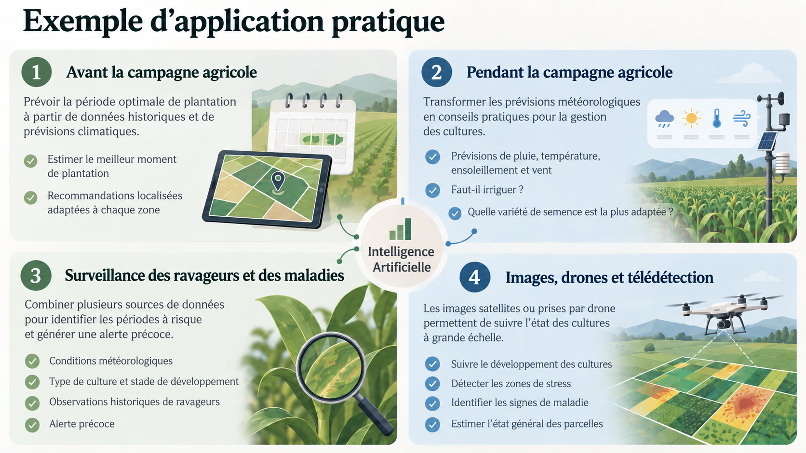
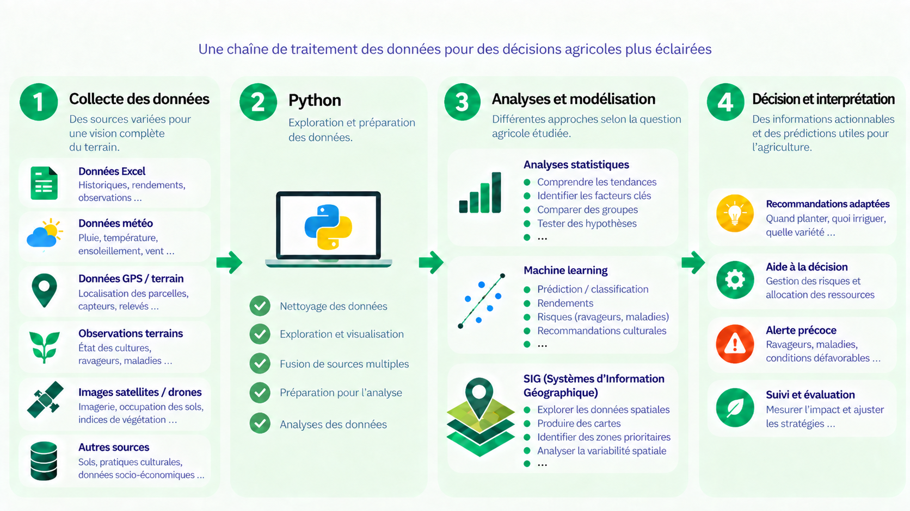

IA dans l’agriculture
Objectifs de cette partie
À la fin de cette partie, vous serez capables de :
- comprendre les principaux enjeux liés à l’utilisation des données en agriculture ;
- identifier comment l’intelligence artificielle peut intervenir dans une chaîne de traitement de données agricoles ;
- reconnaître plusieurs applications concrètes de l’IA, de l’analyse statistique et des SIG en agriculture ;
- distinguer le rôle de Python, du machine learning et de l’analyse géospatiale dans l’aide à la décision.
Contexte et enjeux
Le secteur agricole doit aujourd’hui répondre à plusieurs défis :
- améliorer la production et les rendements ;
- s’adapter aux changements climatiques ;
- gérer durablement les ressources naturelles ;
- suivre l’état des cultures et des exploitations ;
- anticiper les risques agricoles ;
- améliorer la prise de décision.
Dans ce contexte, les données occupent une place de plus en plus importante.
Elles peuvent provenir de différentes sources :
- observations de terrain ;
- données météorologiques ;
- données climatiques ;
- données sur les sols ;
- données historiques de production ;
- fichiers Excel ;
- coordonnées GPS ;
- images satellites ;
- images acquises par drone ;
- observations sur les ravageurs et les maladies.
L’objectif n’est pas seulement de collecter ces données, mais surtout de les transformer en informations utiles pour comprendre une situation et appuyer une décision.
Une donnée brute n’est pas encore une décision.
Elle doit être collectée, préparée, analysée puis interprétée avant de pouvoir être utilisée dans un contexte agricole.
Applications et exemples concrets
Les applications de l’intelligence artificielle et de la science des données sont nombreuses.
Elles peuvent intervenir avant, pendant et après une campagne agricole.

Avant la campagne agricole
Les données historiques et les prévisions climatiques peuvent contribuer à identifier une période optimale de plantation.
L’analyse peut notamment servir à :
- comparer plusieurs années ;
- tenir compte des conditions climatiques ;
- adapter les recommandations à une zone donnée ;
- compléter les calendriers agricoles existants.
Pendant la campagne agricole
Les prévisions météorologiques peuvent être transformées en conseils plus directement exploitables.
Par exemple :
- faut-il irriguer ?
- à quel moment intervenir ?
- quelle variété semble la plus adaptée ?
- certaines conditions présentent-elles un risque particulier ?
Surveillance des ravageurs et des maladies
Un système peut combiner plusieurs informations :
- conditions météorologiques ;
- type de culture ;
- stade de développement ;
- observations historiques de ravageurs ;
- observations historiques de maladies.
L’objectif peut être d’identifier des périodes ou des zones à risque et de produire une alerte précoce.
Images, drones et télédétection
Les images satellites ou acquises par drone peuvent contribuer à :
- suivre le développement des cultures ;
- détecter certaines zones de stress ;
- identifier des signes de maladie ;
- observer les différences au sein d’une parcelle ;
- estimer l’état général des cultures.
Quelques exemples de questions agricoles
La science des données peut contribuer à répondre à des questions telles que :
- Quel rendement peut-on attendre ?
- Quels facteurs sont associés à une faible production ?
- Quelles zones sont les plus vulnérables ?
- Quelles cultures semblent affectées ?
- Comment évolue l’occupation des sols ?
- Où se trouvent les zones prioritaires ?
- Comment mieux allouer certaines ressources ?
- Comment améliorer la planification agricole ?
IA, statistiques et SIG : des outils complémentaires
L’intelligence artificielle ne fonctionne pas seule.
Dans une analyse agricole, plusieurs approches peuvent être combinées :
| Outil | Rôle principal |
|---|---|
| Python | préparer, explorer et analyser les données |
| Analyse statistique | comprendre les relations et tester des hypothèses |
| Machine Learning | prédire, classer ou détecter certains phénomènes |
| SIG | analyser et représenter les phénomènes dans l’espace |
Le choix de l’outil dépend toujours de la question agricole étudiée, de la qualité des données disponibles et de l’objectif recherché.
Points à retenir
- Les données agricoles proviennent de sources très variées.
- Python permet de préparer et explorer ces données.
- L’analyse statistique aide à comprendre les phénomènes observés.
- Le machine learning peut produire des prédictions ou des classifications.
- Les SIG permettent d’intégrer la dimension spatiale.
- L’objectif final est de produire une information utile pour la décision agricole.
Petite réflexion
Choisissez un problème agricole que vous connaissez.
Posez-vous les questions suivantes :
- Quelles données seraient nécessaires pour mieux comprendre ce problème ?
- D’où pourraient provenir ces données ?
- Une analyse statistique serait-elle utile ?
- Un modèle de machine learning pourrait-il être pertinent ?
- La dimension géographique est-elle importante ?
- Quelle décision pourrait être améliorée grâce à ces informations ?
Comment l’IA intervient en agriculture
L’intelligence artificielle intervient au sein d’une chaîne plus large de traitement des données.
Dans ce cours, cette chaîne est représentée en quatre grandes étapes :

1. Collecte des données
Les données agricoles peuvent prendre des formes très différentes :
Ces différentes sources permettent de construire une vision plus complète du système étudié.
2. Préparation et exploration avec Python
Avant toute analyse, les données doivent généralement être préparées.
Python permet notamment de :
3. Analyses et modélisation
Plusieurs approches peuvent ensuite être mobilisées selon la question étudiée.
Analyse statistique
Elle permet par exemple de :
Machine Learning
Le machine learning peut être utilisé pour :
SIG
Les systèmes d’information géographique permettent de :
4. Décision et interprétation
L’objectif final n’est pas seulement de produire un modèle ou une carte.
Il s’agit surtout de transformer les résultats en informations utiles, par exemple :